Sala bankietowa
Duża, jasna sala z parkietem do tańca. Na wesela, komunie i bankiety.
do ok. 150 gości*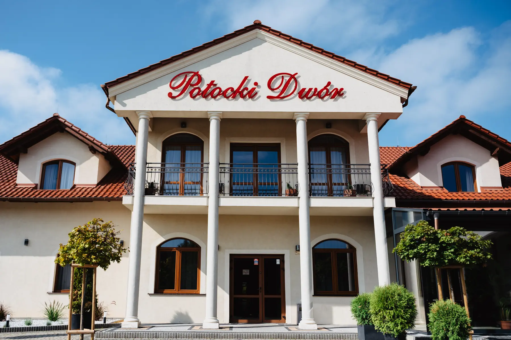
Hotel i restauracja · Potok Wielki pod Jędrzejowem
Kuchnia czynna codziennie od 12:00, sale na wesela i rodzinne uroczystości, pokoje dla gości i wygodne miejsce na szkolenia firmowe.
Restauracja
Jasna sala z widokiem na ogród, obiady w tygodniu i spokojne kolacje w weekend. Menu z cenami jest zawsze aktualne, bo Państwo zmieniają je sami w panelu.
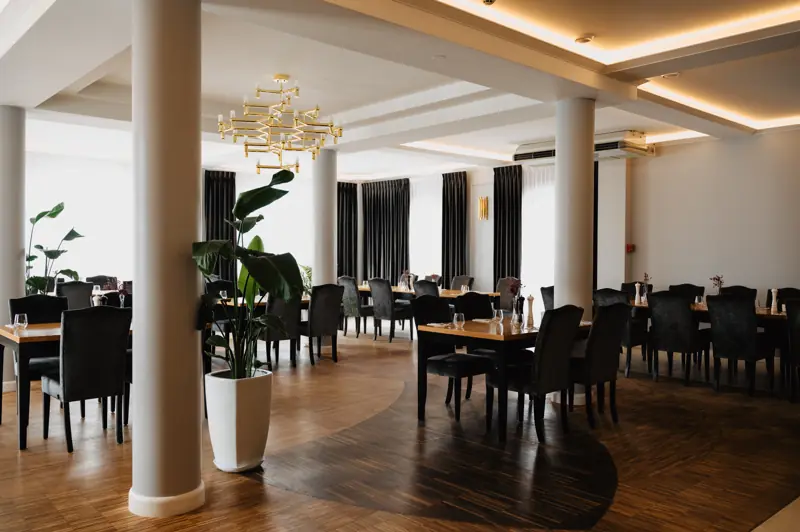
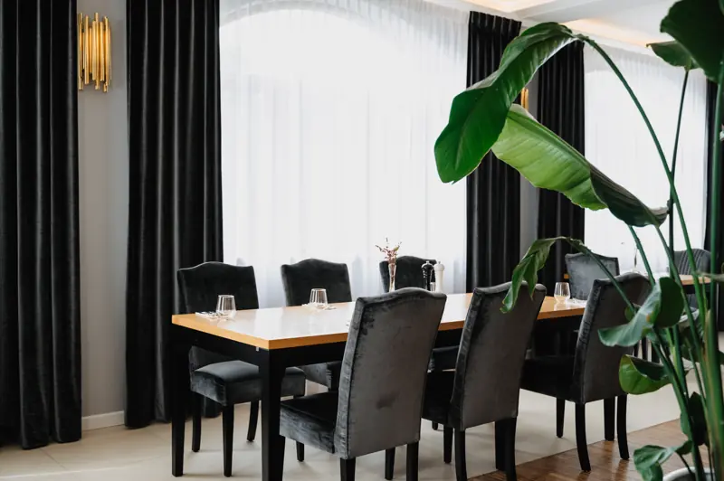
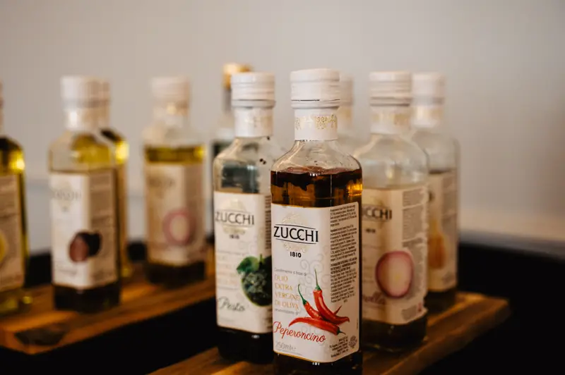
Przyjęcia okolicznościowe
Dobieramy salę do liczby gości, przygotowujemy menu i dekoracje. Państwo przychodzą na gotowe.
Duża, jasna sala z parkietem do tańca. Na wesela, komunie i bankiety.
do ok. 150 gości*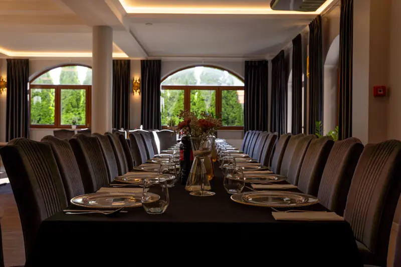
Przytulne wnętrze z oknami na zieleń. Na chrzciny, urodziny i spotkania rodzinne.
do ok. 40 gości*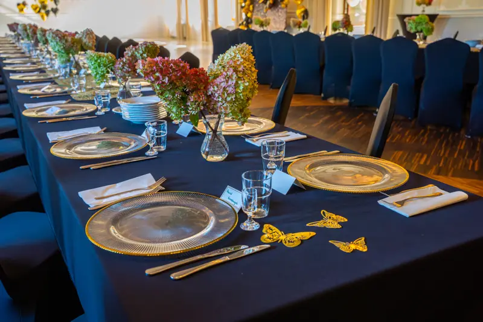
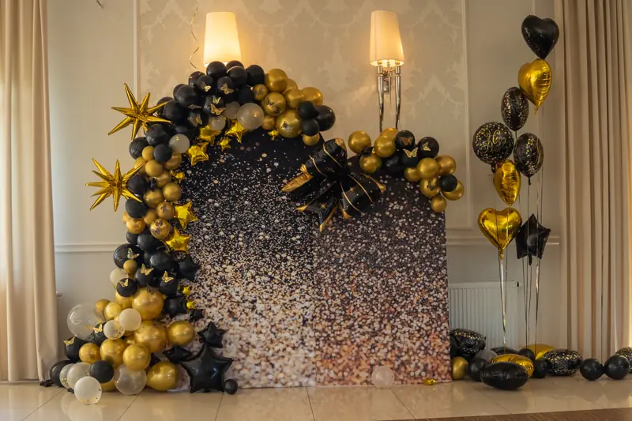
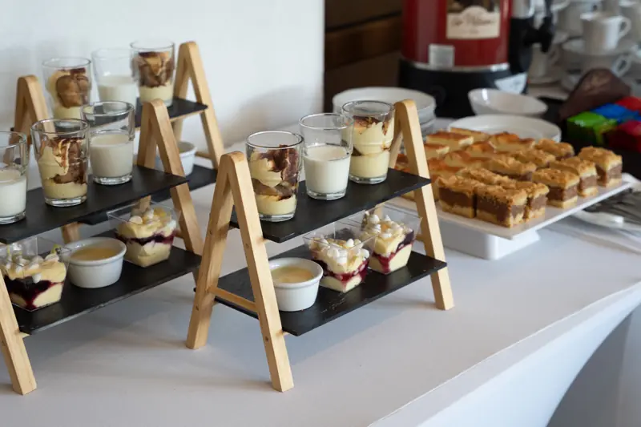
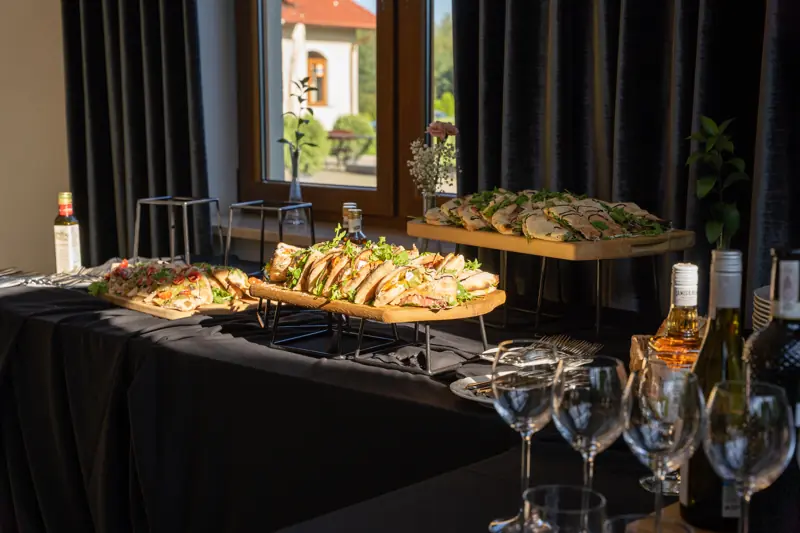
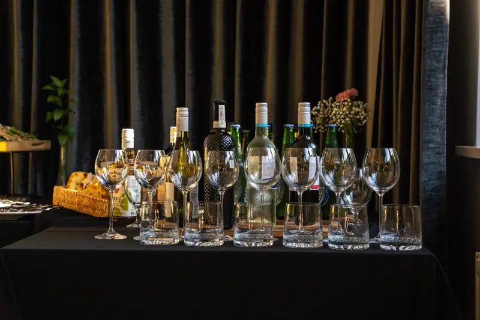
Planer przyjęcia
Wybierz okazję, liczbę gości i datę. Strona od razu pokaże, która sala pasuje i czy termin jest wolny, a zapytanie z tymi danymi trafi prosto do Państwa skrzynki.
* Liczby gości i zajęte terminy w planerze są przykładowe. W gotowej stronie kalendarz pokazuje Państwa rezerwacje.
Hotel
Pokoje jedno-, dwu- i wieloosobowe z łazienkami. Goście weselni nie muszą szukać noclegu ani taksówki, a firmy mają szkolenie i nocleg w jednym miejscu.
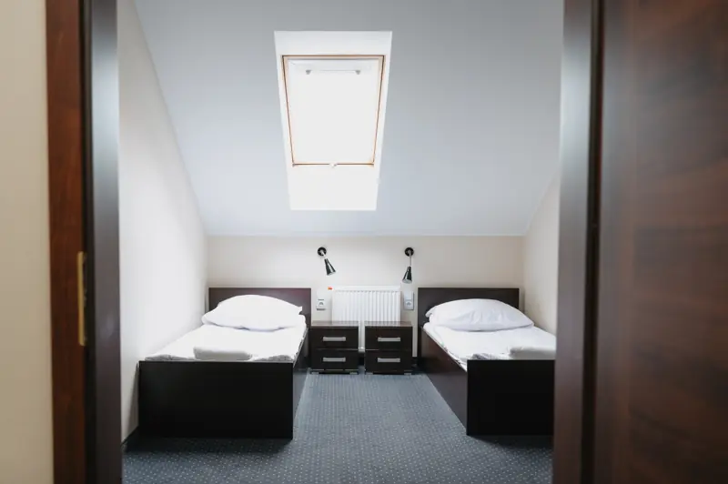
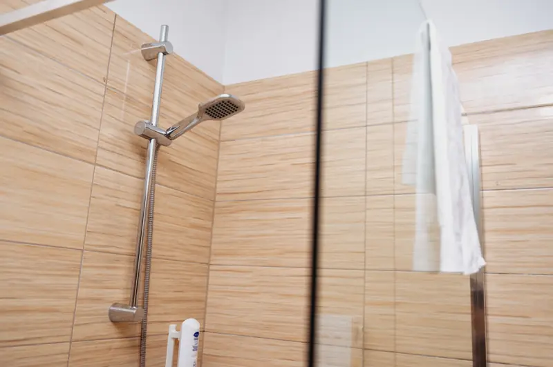
Dla firm
Jedno miejsce i jedna faktura: sala, przerwy kawowe, obiad i nocleg dla uczestników.
sala, przerwa kawowa, obiad dwudaniowy
jak wyżej plus kolacja, nocleg i śniadanie
wigilia, jubileusz firmy, spotkanie z klientami
Kontakt i dojazd
28-300 Jędrzejów, kilka minut samochodem od centrum miasta